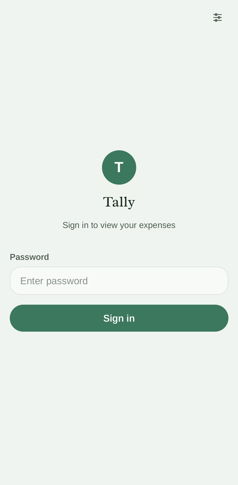
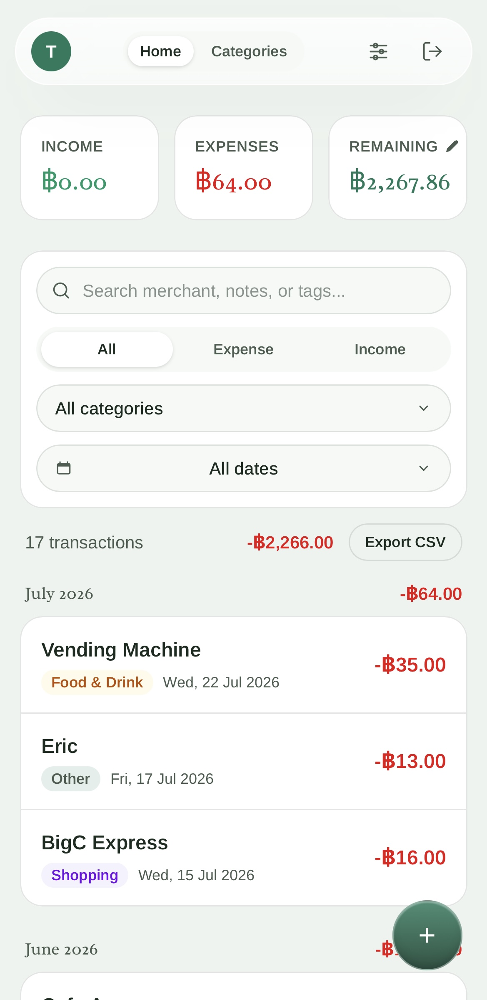
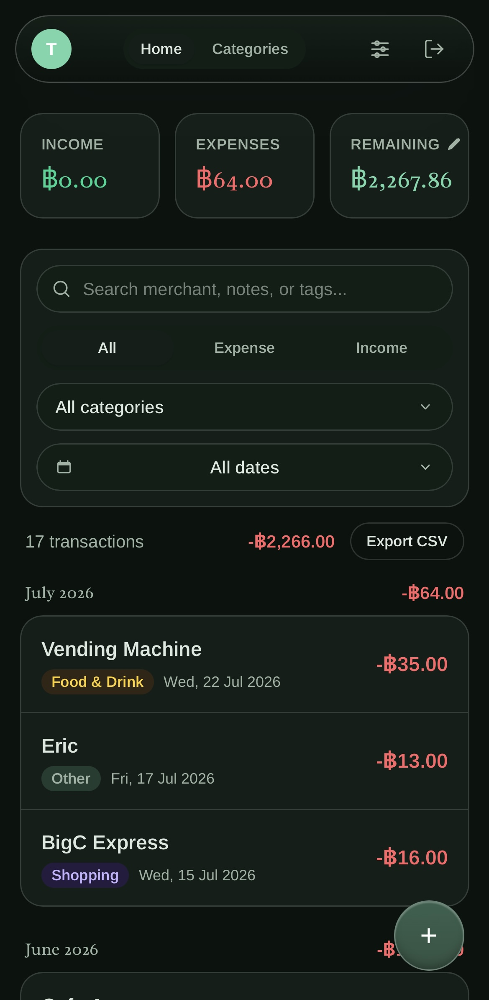
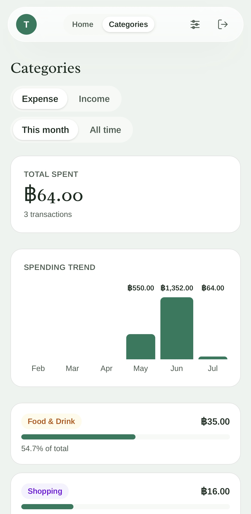
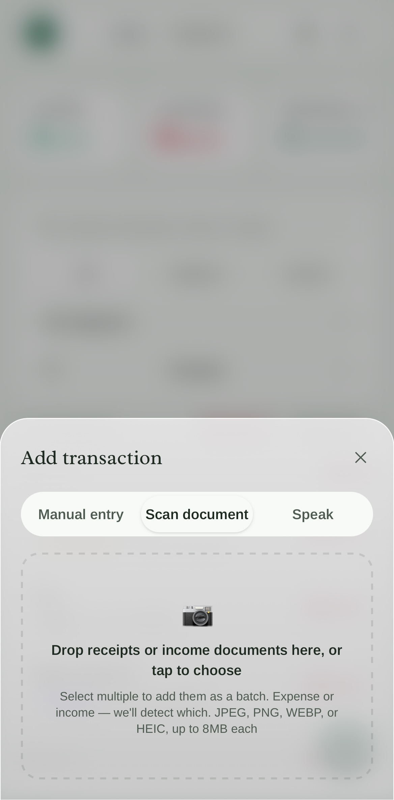
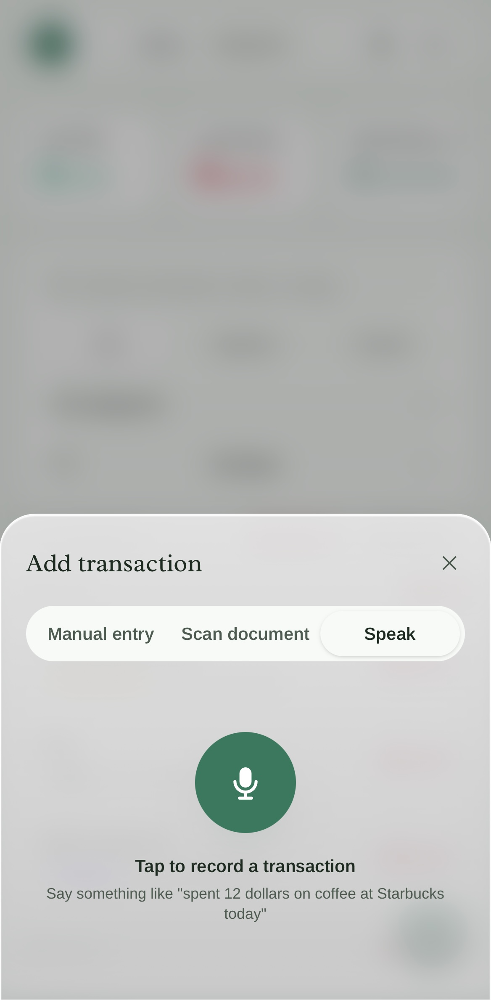
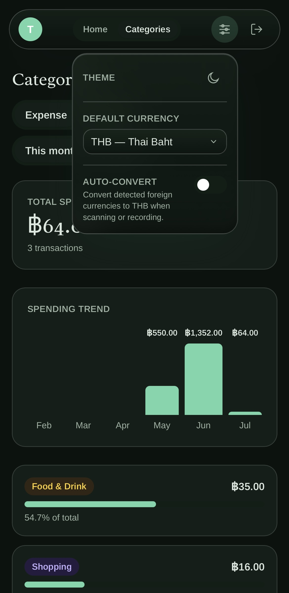

Project 01
Tally
Private expense tracking, reimagined
Tally is a self-hosted, open-source expense tracker built for privacy — no third-party analytics, no data sharing. Snap a photo of a receipt or speak a transaction out loud, and Tally uses AI to parse the details automatically, categorize spending, and convert currencies on the fly.
What it does
Tally handles the everyday mechanics of tracking money: log expenses and income manually, or skip the typing entirely — snap a photo of a receipt and Google Gemini's vision API reads the merchant, total, date, and category for you to confirm. You can also just talk: tap the mic and say something like "spent 12 dollars on coffee at Starbucks today," and Tally transcribes it and fills in the form. Multiple receipts can be dropped in at once and reviewed as a batch. Everything is searchable and filterable by merchant, category, tag, or date range, with a running balance, a six-month spending trend chart, and CSV export when you want the raw numbers elsewhere.
Why I built it
Most expense trackers ask you to hand your spending data to a third party — a company with an incentive to sell insights about your habits, or at minimum a server you don't control. Tally is the opposite: it's self-hosted and open-source, so the only copy of your financial data lives in a database you own. There's no analytics, no data sharing, and no account system beyond a single shared password gating the whole app behind signed, httpOnly session cookies. It's built to be a personal tool for one person or household, not a product with a business model behind it.
How it works
Tally is a Next.js (App Router) app written in TypeScript, styled with Tailwind CSS, and backed by Postgres — it deploys in one click to Vercel's free tier using a Neon database. Receipt scanning and voice transcription both run through Google's Gemini API: photos are sent to Gemini's vision model to extract structured fields, and voice recordings are transcribed and parsed the same way, with every result surfaced for review before it's saved rather than written straight to the database. When a detected amount is in a different currency than your default, Tally converts it automatically using live rates from the Frankfurter API.
Try it yourself
Tally is designed for anyone to run — each deployment is its own private instance behind a password only you know. Click below to deploy your own copy to Vercel's free tier; it takes about five minutes, and you'll need a free Gemini API key from Google AI Studio.
Screenshots







Tools
Good to know
A few things worth knowing before you deploy: each instance is single-user, gated by one shared password rather than individual accounts — if you want to share it with someone else, they'd run their own deployment. Receipt scanning and voice entry need a free Gemini API key from Google AI Studio (manual entry and CSV export work without one), and the app needs a Postgres database, which Vercel provides for free through Neon.